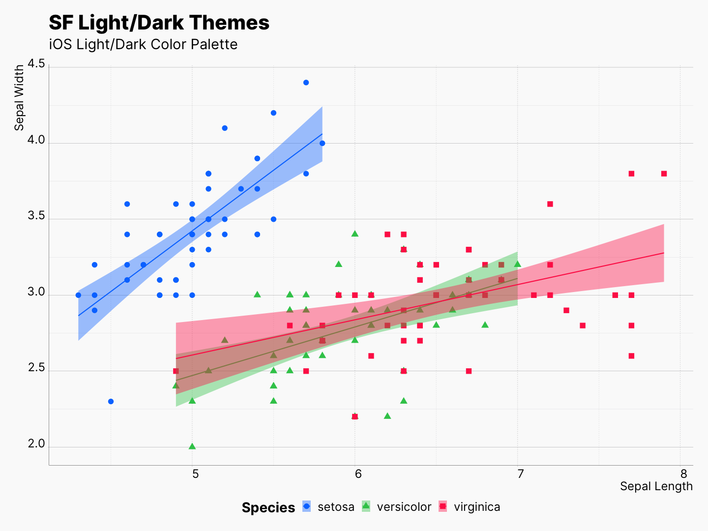
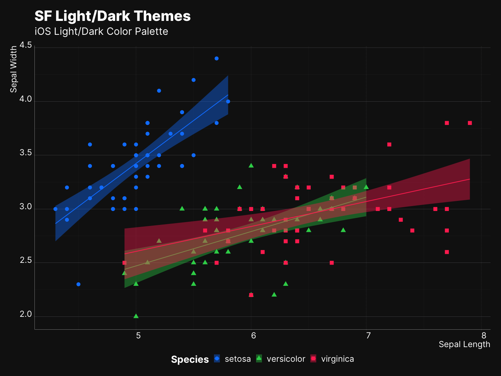
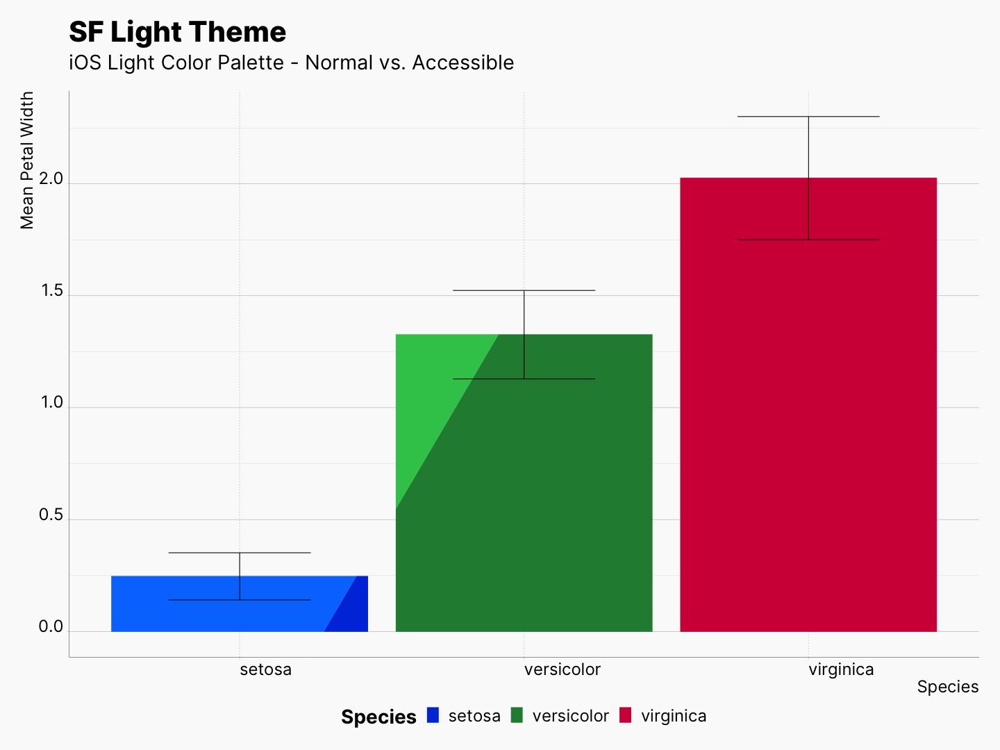

sfthemes is a pair of ggplot2 themes, theme_sf_light(), theme_sf_dark(), and a collection of color scales based on Apple’s Human Interface Guidelines. Themes are inspired by the occasional appearances of charts used by Apple within different contexts, e.g., Apple Health app, Screen Time on iOS and macOS. And colors are adapted from iOS, macOS, and watchOS system colors. Each color scale has a light and dark variant as well that compliments the light/dark themes, scale_colour_ios_light() and scale_colour_ios_dark(), respectively. In addition, sfthemes uses dynamic type sizing in order to provide a consistent and elegant overall resizing and re-scaling of plot elements. Read more here.
When combined, sfthemes offers a unique opportunity to generate two version of your plot with two similar yet individually optimized color palettes for light and dark themes.

Install
Install the development version from GitHub
install.packages("devtools"); library(devtools)
devtools::install_github("amirmasoudabdol/sfthemes")→ I’m planning to apply this to CRAN as soon as they are open! :P
Preparation / Usage
You can load and configure sfthemes using the following commands. If you do not get any errors or warnings, sfthemes is fully configured and can access the required fonts.
library(ggplot2); library(sfthemes)
import_inter() # ← DO NOT FORGET THIS!üö® I‚Äôm having a bit of trouble automatically installing the necessary fonts with the package. Therefore, I highly recommend manually installing the fonts on your system. The
import_interfunction tries to install the fonts, and will print the path containing the font files for manual installation.
Quick Start
sfthemes offers two base themes, theme_sf_light() and theme_sf_dark(). The Light theme uses an off-white background, #fafafa, and a range of black colors for text. In contrast, the dark theme uses an off-black background, #141414, and a range of white colors for text. In addition to themes, sfthemes provides a set of scale_colour/fill_* objects based on various available color palettes in Apple’s platforms. Each color palette has a light and a dark variant, as well as an accessible form of those. Accessible color palettes are adjusted to have higher contrast and less brightness. A list of all available color palettes can be found here.
Light and Dark Themes
In general, we recommend pairing light scales with light themes and dark scales with dark theme. Here we use scale_colour_ios_light(), and scale_colour_ios_dark() to recreate the figure above.
library(ggplot2); library(sfthemes)
gp <- ggplot(aes(x = Sepal.Length,
y = Sepal.Width,
color = Species)) +
geom_point(aes(shape = Species)) +
xlab("Sepal Length") + ylab("Sepal Width") +
labs(title = "SF Light/Dark Themes",
subtitle = "iOS Light/Dark Color Palette") +
geom_smooth(method="lm", aes(fill = Species))
# Light
gp + theme_sf_light(size_class = "xxxLarge") +
scale_colour_ios_light(accessible = FALSE) +
scale_fill_ios_light(accessible = FALSE) +
theme(legend.position = "bottom")
# Dark
gp + theme_sf_dark(size_class = "xxxLarge") +
scale_colour_ios_dark(accessible = FALSE) +
scale_fill_ios_dark(accessible = FALSE) +
theme(legend.position = "bottom")|  |  |
While, sfthemes color scales are optimized for sfthemes themes, you can mix and match any light or dark themes with them; however, you need to make sure that they visually work together.
Accessible Colors
Each color palette is accompanied with an accessible variant of itself. In order to access the accessible color palettes, you can use accessible parameter as follow. The Colors article elaborates on the availability, differences, and features of each system color palette.
iris.sum <- iris %>%
group_by(Species) %>%
summarize(PW.mean = mean(Petal.Width),
PW.sd = sd(Petal.Width))
gp <- ggplot(iris.sum, aes(x = Species)) +
geom_bar(aes(y = PW.mean, fill = Species, color = Species),
position = "dodge", stat = "identity") +
geom_errorbar(aes(ymin = PW.mean - PW.sd, ymax = PW.mean + PW.sd),
position = position_dodge(width = 0.5),
width = 0.5,
color = "black") + # ← or "white" in dark theme
labs(title = "SF Light Theme",
subtitle = "iOS Light Color Palette - Normal vs. Accessible",
y = "Mean Petal Width", x = "Species")
# Normal
gp + theme_sf_light(size_class = "xxxLarge") +
scale_colour_ios_light(accessible = FALSE) +
scale_fill_ios_light(accessible = FALSE) +
theme(legend.position = "bottom")
# Accessible
gp + theme_sf_light(size_class = "xxxLarge") +
scale_colour_ios_light(accessible = TRUE) +
scale_fill_ios_light(accessible = TRUE) +
theme(legend.position = "bottom")|  |  |
Scaling
sfthemes provides 7 size classes, ie., scaling factors. Size classes can be applied to texts, elements, or both. The example below is generated from combination of light/dark plots and showcases all available size classes. The Size Classes article elaborates on the dynamic type sizing.
size_class <- "Medium" # ← You can modify the size class here
gp <- ggplot(aes(x = Sepal.Length,
y = Sepal.Width,
color = Species)) +
geom_point(aes(shape = Species)) +
xlab("Sepal Length") + ylab("Sepal Width") +
labs(title = "SF Light/Dark Theme",
subtitle = paste0("Size Class: ", size_class) +
geom_smooth(method="lm", aes(fill = Species))
# Light
gp + theme_sf_light(size_class = size_class) + # ← Setting the size class
scale_colour_ios_light(accessible = FALSE) +
scale_fill_ios_light(accessible = FALSE) +
theme(legend.position = "bottom")
# Dark
gp + theme_sf_dark(size_class = size_class) + # ← Setting the size class
scale_colour_ios_dark(accessible = FALSE) +
scale_fill_ios_dark(accessible = FALSE) +
theme(legend.position = "bottom")
Misc.
Goals
The goal of sfthemes is to provide a pair of minimal and accessible light and dark themes. Moreover, sfthemes focuses on bringing Apple’s system colors to ggplot2, in the form of color and fill scales. Lastly, sfthemes tries to incorporate modern typographical advancement into theme’s structure and aesthetic in order to guarantee an elegant visualization for different screen resolutions and sizes.
Future Plan
While I will mainly focus on keeping sfthemes functional, I have a short list of features that I would like to implement, if I find some times.
- Adding three spacing classes to control the spacing and margins of plots elements.
- Adding the SF Pro to themes, and using different variants of it for optimal readability in different size classes
Contribution
If you find any bugs, or have any suggestions, please feel free to reach out to me, either by opening an issue or a pull request, or dropping an email.
Credits
I stared this project by cloning the amazing hrbrthemes, and along the way learned a lot from its coding style and methods.
Support
Please let me know if you happen to use sfthemes in your projects. I would love to know how you are using it and whether you like it.
Lastly, I quite like ko-fi!